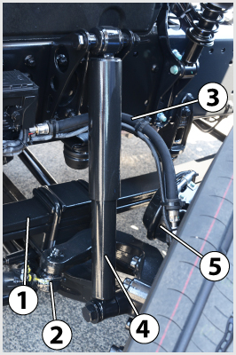
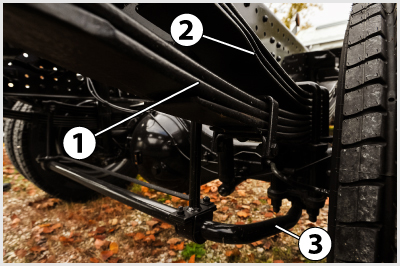
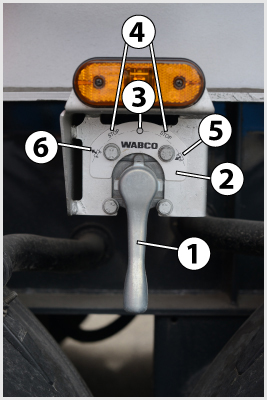
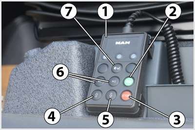
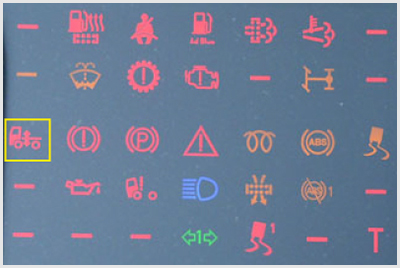

<!DOCTYPE html>
<html lang="hu">
<head>
    <meta charset="UTF-8" />
    <meta name="viewport" content="width=device-width, initial-scale=1.0" />
    <title>Kerékfelfüggesztés, rugózás, lengéscsillapítás, emelés-süllyesztés – „C” kategória - Szerkezeti és üzemeltetési ismeretek</title>
    <meta property="og:site_name" content="KRESZ teszt &ndash; „C” kategória - Szerkezeti és üzemeltetési ismeretek" />
    <meta property="og:description" content="Kerékfelfüggesztés, rugózás, lengéscsillapítás, emelés-süllyesztés kérdések és helyes válaszok („C” kategória - Szerkezeti és üzemeltetési ismeretek)" />
    <link rel="stylesheet" href="../test.css" />
</head>
<body>
    <div class="topic-header">
        <nav class="topic-breadcrumbs">
            <a href="index.html" class="crumb-link">&laquo; „C” kategória - Szerkezeti és üzemeltetési ismeretek témakörei</a>
            <span class="crumb-sep">/</span>
            <span class="crumb-current">Kerékfelfüggesztés, rugózás, lengéscsillapítás, emelés-süllyesztés</span>
            <span class="crumb-sep">/</span>
            <a href="../../index.html" class="crumb-home">Interaktív teszt &raquo;</a>
        </nav>

        <div class="topic-title-section">
            <span class="topic-badge">Témakör 17 / 24</span>
            <h2>Kerékfelfüggesztés, rugózás, lengéscsillapítás, emelés-süllyesztés <small class="topic-badge-info">(27 kérdés, vizsgán: 1 db., 1 pont)</small></h2>
        </div>

        <div class="topic-nav-bar">
            <a href="group-1668681533.html" class="nav-btn nav-prev-btn" title="Kerékcsere, gumiabroncsok szerelése, kerékkiegyensúlyozás">&laquo; Előző témakör</a>
            <a href="index.html" class="nav-btn nav-hub-btn">Témakörök listája</a>
            <a href="group-1668681703.html" class="nav-btn nav-next-btn" title="Fékrendszerek funkció">Következő témakör &raquo;</a>
        </div>
    </div>

    <div class="group" id="group-1668681669">
        <div class="questions">
            <div class="question" id="question-704418">
                                                                        <!-- <h4>410. A lengéscsillapítók hibája esetén...</h4> -->
                        <dl>
                            <dt>410. A lengéscsillapítók hibája esetén... <a href="#question-704418"><small>#704418</small></a></dt>
                                                            <dd class="correct">a kerekek és az útfelület kapcsolata romlik, csökken a jármű stabilitása, a gumiabroncsok kopása pedig rendellenessé válik.</dd>
                                                            <dd class="">nehezebbé válik a sebességváltás.</dd>
                                                            <dd class="">megnő a fékbetétek kopása.</dd>
                                                            <dd class="">csökken a jármű gyorsítóképessége.</dd>
                                                    </dl>
                    </div>
                                                            <div class="question" id="question-704567">
                                                                            <div class="exercise-image">
                                
                            </div>
                                                <!-- <h4>411. Milyen funkciója van a képen látható 2-es jelű hátsó futóműnek?</h4> -->
                        <dl>
                            <dt>411. Milyen funkciója van a képen látható 2-es jelű hátsó futóműnek? <a href="#question-704567"><small>#704567</small></a></dt>
                                                            <dd class="correct">Ez egy emelhető segédfutómű, amelyet akkor eresztenek le, ha a jármű hátsó tengelyterhelése ezt szükségessé teszi.</dd>
                                                            <dd class="">Ez egy mankókerekes futómű, amelyre egyenetlen úton való haladáskor van szükség, hogy a jármű ne akadjon el.</dd>
                                                            <dd class="">Ez egy segédfutómű, amelyre a jámű pótkerekeit rögzítik.</dd>
                                                    </dl>
                    </div>
                                                            <div class="question" id="question-704568">
                                                                            <div class="exercise-image">
                                
                            </div>
                                                <!-- <h4>412. A képen látható 1-es és 2-es jelű tehergépkocsi hátsó futóművek közül melyik a nem hajtott?</h4> -->
                        <dl>
                            <dt>412. A képen látható 1-es és 2-es jelű tehergépkocsi hátsó futóművek közül melyik a nem hajtott? <a href="#question-704568"><small>#704568</small></a></dt>
                                                            <dd class="correct">A 2-es jelű.</dd>
                                                            <dd class="">Az 1-es jelű.</dd>
                                                            <dd class="">Mindkettő.</dd>
                                                            <dd class="">Egyik sem.</dd>
                                                    </dl>
                    </div>
                                                            <div class="question" id="question-704579">
                                                                            <div class="exercise-image">
                                
                            </div>
                                                <!-- <h4>413. A képen látható 2-es jelű alkatrész...</h4> -->
                        <dl>
                            <dt>413. A képen látható 2-es jelű alkatrész... <a href="#question-704579"><small>#704579</small></a></dt>
                                                            <dd class="correct">a laprugó.</dd>
                                                            <dd class="">a kormánytolórúd.</dd>
                                                            <dd class="">a hídtest.</dd>
                                                            <dd class="">a lengéscsillapító.</dd>
                                                    </dl>
                    </div>
                                                            <div class="question" id="question-704580">
                                                                            <div class="exercise-image">
                                
                            </div>
                                                <!-- <h4>414. A képen látható 4-es jelű alkatrész...</h4> -->
                        <dl>
                            <dt>414. A képen látható 4-es jelű alkatrész... <a href="#question-704580"><small>#704580</small></a></dt>
                                                            <dd class="correct">a lengéscsillapító.</dd>
                                                            <dd class="">a keresztstabilizátor.</dd>
                                                            <dd class="">a kormánytolórúd.</dd>
                                                            <dd class="">a hídtest.</dd>
                                                    </dl>
                    </div>
                                                            <div class="question" id="question-704646">
                                                                            <div class="exercise-image">
                                
                            </div>
                                                <!-- <h4>415. A képen látható 3-as jelű alkatrész a tehergépkocsi hátsó híd felfüggesztés...</h4> -->
                        <dl>
                            <dt>415. A képen látható 3-as jelű alkatrész a tehergépkocsi hátsó híd felfüggesztés... <a href="#question-704646"><small>#704646</small></a></dt>
                                                            <dd class="correct">keresztstabilizátora.</dd>
             �0      ��0b"(            `                  <dd class=*"wueéd laprugókþtEce.</dd>
                                �1              ! �       <dd claSs�6".dő laprugókötegu.|'dd>
       $ �" b          $ �"`j             �  b      </dl>
                    </div>
                            �0            " (!   � (b$0"  <d	v�Rlass="que3tiNn" id="quebt�gn-744&50">
                   �`(b!$0 `(          " (!       �  b       �  b   `      <div class="exercise-image">
  0 `      ( $                 
                            </div>
          "�8# (!      ( $   0 `(      `! � (!<!-- <h4>4!6n(Mi a�k��pmnhátható emelő-s��dM}esztő Sz�|ep pefeeltetése?</h4> -->
�0"C                  ���,
+      " (!                  <dt>416. Mi a képen láth!tÒ emelő-süllyesztő szelep reod�lted��{e? <a href="#questiof-44670"<�}all>#704670</small></a></dt>
                 � (b$            �  b             " (! ` !�d clas{=gorrect">A jármű felépítményének megfelelő magassága állítható be vele rakodás, cserefelépítmény, konténer le- és felvétele, illetve pótkocsi felkapcsolása esetén.</dd>
                                                            <dd class="">A jármű szintmagassága szabályozható vele azért, hogy alkalmazkodni lehessen a különböző út- és terepviszonyokhoz.</dd>
                                                            <dd class="">A jármű szintmagassága szabályozható vele azért, hogy a különböző országokban érvényes eltérő előírásokhoz alkalmazkodni tudjon a jármű.</dd>
                                                            <dd class="">A billenő felépítmény mozgatása végezhető vele.</dd>
                                                    </dl>
                    </div>
                                                            <div class="question" id="question-704706">
                                                                            <div class="exercise-image">
                                
                            </div>
                                                <!-- <h4>417. Mire szolgál a képen látható kezelőegység?</h4> -->
                        <dl>
                            <dt>417. Mire szolgál a képen látható kezelőegység? <a href="#question-704706"><small>#704706</small></a></dt>
                                                            <dd class="correct">Az elektronikus légrugózás emelő-süllyesztő funkcióinak vezérlésére.</dd>
                                                            <dd class="">A vezetőülés beállítására.</dd>
                                                            <dd class="">A fülkebillentés működtetésére.</dd>
                                                            <dd class="">A billenthető felépítmény vezérlésére.</dd>
                                                    </dl>
                    </div>
                                                            <div class="question" id="question-704708">
                                                                            <div class="exercise-image">
                                
                            </div>
                                                <!-- <h4>418. Mire figyelmeztet a képen a bekeretezett visszajelző lámpa?</h4> -->
                        <dl>
                            <dt>418. Mire figyelmeztet a képen a bekeretezett visszajelző lámpa? <a href="#question-704708"><small>#704708</small></a></dt>
                                                            <dd class="correct">Az elektronikus légrugózás működésével kapcsolatos hibára vagy rendellenességre.</dd>
                                                            <dd class="">A fülkebillentés működésével kapcsolatos hibára vagy rendellenességre.</dd>
                                                            <dd class="">A billenő felépítmény működésével kapcsolatos hibára vagy rendellenességre.</dd>
                                                    </dl>
                    </div>
                                                            <div class="question" id="question-704716">
                                                                        <!-- <h4>419. Általában milyen a tehergépkocsik és pótkocsijaik kerékfelfüggesztése?</h4> -->
                        <dl>
                            <dt>419. Általában milyen a tehergépkocsik és pótkocsijaik kerékfelfüggesztése? <a href="#question-704716"><small>#704716</small></a></dt>
                                                            <dd class="correct">Általában kapcsolt kerékfelfüggesztésű (merev hidas).</dd>
                                                            <dd class="">Általában kettős kereszt-lengőkaros felfüggesztésű.</dd>
                                                            <dd class="">Általában ferde- vagy hosszlengőkaros.</dd>
                                                            <dd class="">Általában rugózatlan.</dd>
                                                    </dl>
                    </div>
                                                            <div class="question" id="question-704717">
                                                                        <!-- <h4>420. Az emelhető segédfutómű felemelésével...</h4> -->
                        <dl>
                            <dt>420. Az emelhető segédfutómű felemelésével... <a href="#question-704717"><small>#704717</small></a></dt>
                                                            <dd class="correct">csökken a gördülési ellenállás, a tüzelőanyag-fogyasztás és a gumiabroncsok kopása, illetve növelhető a vele párban futó hajtott tengely terhelése.</dd>
                                                            <dd class="">kedvezőbb teherelosztás biztosítható az első és a hátsó tengelyek között.</dd>
                                                            <dd class="">nagyobb stabilitás biztosítható a terepen mozgó jármű számára.</dd>
                                                            <dd class="">nő a jármű terhelhetősége.</dd>
                                                    </dl>
                    </div>
                                                            <div class="question" id="question-704809">
                                                                        <!-- <h4>421. Mi a független kerékfelfüggesztések előnye a kapcsolt (merev hidas) felfüggesztésekhez képest?</h4> -->
                        <dl>
                            <dt>421. Mi a független kerékfelfüggesztések előnye a kapcsolt (merev hidas) felfüggesztésekhez képest? <a href="#question-704809"><small>#704809</small></a></dt>
                                                            <dd class="correct">A kerekek be- és kirugózhatnak anélkül, hogy a másik kereket elbillenésre kényszerítenék. Ezáltal jobbak a jármű menettulajdonságai és stabilitása.</dd>
                                                            <dd class="">Nagyobb terhek elviselésére alkalmas.</dd>
                                                            <dd class="">Nagyobb fékerők és vonóerők átadására alkalmas.</dd>
                                                            <dd class="">Kormányzott kerekek felfüggesztése csak így oldható meg.</dd>
                                                    </dl>
                    </div>
                                                            <div class="question" id="question-704810">
                                                                        <!-- <h4>422. Mi a stabilizátor feladata a kerék felfüggesztésében?</h4> -->
                        <dl>
                            <dt>422. Mi a stabilizátor feladata a kerék felfüggesztésében? <a href="#question-704810"><small>#704810</small></a></dt>
                                                            <dd class="correct">Kanyarban a felépítmény túlzott mértékű dőlésének megakadályozása.</dd>
                                                            <dd class="">A vonóerő elosztása a terhelési viszonyoknak megfelelően.</dd>
                                                            <dd class="">Hirtelen gázadáskor a kerekek kipörgésének a megkadályozása.</dd>
                                                    </dl>
                    </div>
                                                            <div class="question" id="question-704811">
                                                                        <!-- <h4>423. Gépjárműveken és pótkocsikon általában milyen típusú lengéscsillapítót alkalmaznak?</h4> -->
                        <dl>
                            <dt>423. Gépjárműveken és pótkocsikon általában milyen típusú lengéscsillapítót alkalmaznak? <a href="#question-704811"><small>#704811</small></a></dt>
                                                            <dd class="correct">Hidraulikus, teleszkópos lengéscsillapítókat.</dd>
                                                            <dd class="">Lamellás, súrlódásos lengéscsillapítókat.</dd>
                                                            <dd class="">Hidraulikus, karos lengéscsillapítókat.</dd>
                                                            <dd class="">Mágneses lengéscsillapítókat.</dd>
                                                    </dl>
                    </div>
                                                            <div class="question" id="question-704812">
                                                                        <!-- <h4>424. Milyen típusú rugózással valósítható meg az alvázmagasság-állítás?</h4> -->
                        <dl>
                            <dt>424. Milyen típusú rugózással valósítható meg az alvázmagasság-állítás? <a href="#question-704812"><small>#704812</small></a></dt>
                                                            <dd class="correct">Légrugózással.</dd>
                                                            <dd class="">Laprugókkal.</dd>
                                                            <dd class="">Csavarrugókkal.</dd>
                                                            <dd class="">Gumirugókkal.</dd>
                                                    </dl>
                    </div>
                                                            <div class="question" id="question-704814">
                                                                        <!-- <h4>425. Mikor célszerű tartósan felemelni az emelhető segédtengelyt?</h4> -->
                        <dl>
                            <dt>425. Mikor célszerű tartósan felemelni az emelhető segédtengelyt? <a href="#question-704814"><small>#704814</small></a></dt>
                                                            <dd class="correct">Terheletlen, illetve kis terhelésű járműnél.</dd>
                                                            <dd class="">Maximálisan terhelt járműnél.</dd>
                                                            <dd class="">Meghibásodott jármű vontatásakor.</dd>
                                                            <dd class="">Túlterhelt jármű esetén.</dd>
                                                    </dl>
                    </div>
                                                            <div class="question" id="question-704815">
                                                                        <!-- <h4>426. Milyen járműveknél alkalmaznak segédrugóval kombinált laprugót?</h4> -->
                        <dl>
                            <dt>426. Milyen járműveknél alkalmaznak segédrugóval kombinált laprugót? <a href="#question-704815"><small>#704815</small></a></dt>
                                                            <dd class="correct">Azoknál, melyeknél nagy a jármű saját tömege és össztömege közötti különbség.</dd>
                                                            <dd class="">Azoknál, melyeknél lágy rugózás megvalósítása a cél.</dd>
                                                            <dd class="">Azoknál, melyeknél alváz magasságállítást kívánnak megvalósítani.</dd>
                                                            <dd class="">Azoknál, melyeknél a főrugó törése esetén is biztosítani kell a rugózás működőképességét.</dd>
                                                    </dl>
                    </div>
                                                            <div class="question" id="question-704816">
                                                                        <!-- <h4>427. Milyen rugózási rendszerek terjedtek el leginkább a korszerű nehéz haszonjárműveknél?</h4> -->
                        <dl>
                            <dt>427. Milyen rugózási rendszerek terjedtek el leginkább a korszerű nehéz haszonjárműveknél? <a href="#question-704816"><small>#704816</small></a></dt>
                                                            <dd class="correct">Laprugós és légrugós.</dd>
                                                            <dd class="">Tekercs és torziós rugós.</dd>
                                                            <dd class="">Hidarulikus és gázrugós.</dd>
                                                            <dd class="">Gumirugós.</dd>
                                                    </dl>
                    </div>
                                                            <div class="question" id="question-714587">
                                                                            <div class="exercise-image">
                                
                            </div>
                                                <!-- <h4>428. A képen látható 1-es jelű karral...</h4> -->
                        <dl>
                            <dt>428. A képen látható 1-es jelű karral... <a href="#question-714587"><small>#714587</small></a></dt>
                                                            <dd class="correct">a jármű felépítményének emelése és süllyesztése végezhető.</dd>
                                                            <dd class="">a billenő felépítmény mozgása vezérelhető.</dd>
                                                            <dd class="">a jármű terhelésének megfelelő fékerőhatárok állíthatók be.</dd>
                                                            <dd class="">a jármű terhelésének megfelelő rugózás állítható be.</dd>
                                                    </dl>
                    </div>
                                                            <div class="question" id="question-714624">
                                                                        <!-- <h4>429. Mi történik akkor, ha a lengéscsillapítók állapota nem megfelelő, és nem képesek hatásosan csillapítani a lengéseket?</h4> -->
                        <dl>
                            <dt>429. Mi történik akkor, ha a lengéscsillapítók állapota nem megfelelő, és nem képesek hatásosan csillapítani a lengéseket? <a href="#question-714624"><small>#714624</small></a></dt>
                                                            <dd class="correct">Jelentősen leromlik a gépjármű menetstabilitása és az utazás kényelme, valamint a gumiabroncsok kopása is rendellesé válik, illetve megnövekszik.</dd>
                                                            <dd class="">Kényelmetlenebbé válik az utazás a gépkocsiban.</dd>
                                                            <dd class="">Valamelyest megnövekszik a gumiabroncsok kopása.</dd>
                                                            <dd class="">Nehezebbé válik a sebességváltás.</dd>
                                                    </dl>
                    </div>
                                                            <div class="question" id="question-721157">
                                                                            <div class="exercise-image">
                                
                            </div>
                                                <!-- <h4>430. A képen látható emelő-süllyesztő szelep 2-es jelű tábláján a 4-es jelű helyzetek...</h4> -->
                        <dl>
                            <dt>430. A képen látható emelő-süllyesztő szelep 2-es jelű tábláján a 4-es jelű helyzetek... <a href="#question-721157"><small>#721157</small></a></dt>
                                                            <dd class="correct">a süllyesztéssel, vagy emeléssel beállított helyzet megtartását jelentik.</dd>
                                                            <dd class="">a normál rugózást jelentik.</dd>
                                                            <dd class="">a folyamatos emelést jelentik.</dd>
                                                            <dd class="">a folyamatos süllyesztést jelentik.</dd>
                                                    </dl>
                    </div>
                                                            <div class="question" id="question-721158">
                                                                        <!-- <h4>431. Mi a célja az alvázmagasság állításának?</h4> -->
                        <dl>
                            <dt>431. Mi a célja az alvázmagasság állításának? <a href="#question-721158"><small>#721158</small></a></dt>
                                                            <dd class="correct">Félpótkocsik fel- és lekapcsolásának, illetve rakodási feladatoknak (pl. konténerek fel- és levétele) a megkönnyítése.</dd>
                                                            <dd class="">A jármű hasmagasságának növelése rossz minőségű úton, illetve légellenállásának csökkentése nagy sebességű haladásnál.</dd>
                                                            <dd class="">A rugó úthosszának megnövelése, ezáltal a menetkényelem javítása.</dd>
                                                            <dd class="">A járműmagasság vonatkozásában a különböző országokban érvényes eltérő előírások teljesíthetősége.</dd>
                                                    </dl>
                    </div>
                                                            <div class="question" id="question-721187">
                                                                        <!-- <h4>432. Tehergépkocsiknál mi a hátsó ikertengely alkalmazásának oka?</h4> -->
                        <dl>
                            <dt>432. Tehergépkocsiknál mi a hátsó ikertengely alkalmazásának oka? <a href="#question-721187"><small>#721187</small></a></dt>
                                                            <dd class="correct">Az ikertengely két tengelyén megoszlik a terhelés, így nő a jármű megengedett össztömege.</dd>
                                                            <dd class="">Jelentős tüzelőanyag-fogyasztáscsökkenést okoz az ikerkerekekkel szemben.</dd>
                                                            <dd class="">Megkönnyíti a kerékcserét és a jármű kanyarodási sugara is kisebb lesz.</dd>
                                                    </dl>
                    </div>
                                                            <div class="question" id="question-721196">
                                                                        <!-- <h4>433. A lengéscsillapítók meghibásodására következtethetünk, ha...</h4> -->
                        <dl>
                            <dt>433. A lengéscsillapítók meghibásodására következtethetünk, ha... <a href="#question-721196"><small>#721196</small></a></dt>
                                                            <dd class="correct">a gépkocsi menet közben jelentősen beleng és a kerékfelfüggesztés esetenként az ütközőjére felüt.</dd>
                                                            <dd class="">nehezebbé válik a sebességváltás.</dd>
                                                            <dd class="">az első kerekek szitáló, ugráló mozgása miatt a kormánykerék erősen rángat, a jármű nehezen irányítható.</dd>
                                                            <dd class="">a gumiabroncsok oly mértékben felmelegednek, hogy akár ki is gyulladhatnak.</dd>
                                                    </dl>
                    </div>
                                                            <div class="question" id="question-724193">
                                                                            <div class="exercise-image">
                                
                            </div>
                                                <!-- <h4>434. A képen látható emelő-süllyesztő szelep 2-es jelű tábláján a 3-as jelű helyzet...</h4> -->
                        <dl>
                            <dt>434. A képen látható emelő-süllyesztő szelep 2-es jelű tábláján a 3-as jelű helyzet... <a href="#question-724193"><small>#724193</small></a></dt>
                                                            <dd class="correct">a normál rugózást jelenti.</dd>
                                                            <dd class="">a folyamatos emelést jelenti.</dd>
                                                            <dd class="">a folyamatos süllyesztést jelenti.</dd>
                                                            <dd class="">a süllyesztéssel, vagy emeléssel beállított helyzet megtartását jelenti.</dd>
                                                    </dl>
                    </div>
                                                            <div class="question" id="question-724210">
                                                                            <div class="exercise-image">
                                
                            </div>
                                                <!-- <h4>435. A képen látható 3-as jelű alkatrész...</h4> -->
                        <dl>
                            <dt>435. A képen látható 3-as jelű alkatrész... <a href="#question-724210"><small>#724210</small></a></dt>
                                                            <dd class="correct">a keresztstabilizátor.</dd>
                                                            <dd class="">a kormánytolórúd.</dd>
                                                            <dd class="">a laprugó.</dd>
                                                            <dd class="">a lengéscsillapító.</dd>
                                                    </dl>
                    </div>
                                                            <div class="question" id="question-724211">
                                                                            <div class="exercise-image">
                                
                            </div>
                                                <!-- <h4>436. A képen látható tehergépkocsi hátsó híd felfüggesztés...</h4> -->
                        <dl>
                            <dt>436. A képen látható tehergépkocsi hátsó híd felfüggesztés... <a href="#question-724211"><small>#724211</small></a></dt>
                                                            <dd class="correct">egy fő és egy segéd laprugóköteget tartalmaz oldalanként.</dd>
                                                            <dd class="">egy laprugóköteget tartalmaz oldalanként.</dd>
                                                            <dd class="">egy légrugót és egy laprugóköteget tartalmaz oldalanként.</dd>
                                                            <dd class="">két légrugót tartalmaz oldalanként.</dd>
                                                    </dl>
                    </div>
                                                            <div class="question" id="question-724212">
                                                                        <!-- <h4>437. Miért alkalmaznak a tehergépkocsiknál általában kapcsolt (merev hidas) kerékfelfüggesztést?</h4> -->
                        <dl>
                            <dt>437. Miért alkalmaznak a tehergépkocsiknál általában kapcsolt (merev hidas) kerékfelfüggesztést? <a href="#question-724212"><small>#724212</small></a></dt>
                                                            <dd class="correct">Mert egyszerűbb, olcsóbb és nagy terhek elviselésére alkalmas.</dd>
                                                            <dd class="">Mert nagyobb sebesség elérését teszi lehetővé.</dd>
                                                            <dd class="">Mert lágyabb rugózást lehet vele megvalósítani.</dd>
                                                            <dd class="">Mert ebben a kategóriában hajtott futóművet csak így lehet kialakítani.</dd>
                                                    </dl>
                    </div>
                                    </div>
        </div>
    </div>

    <div class="topic-footer-nav" style="margin-top: 40px;">
        <div class="topic-nav-bar">
            <a href="group-1668681533.html" class="nav-btn nav-prev-btn" title="Kerékcsere, gumiabroncsok szerelése, kerékkiegyensúlyozás">&laquo; Előző témakör</a>
            <a href="index.html" class="nav-btn nav-hub-btn">Témakörök listája</a>
            <a href="#top" class="nav-btn nav-top-btn" onclick="window.scrollTo({top:0,behavior:'smooth'}); return false;">^ Tetejére</a>
            <a href="group-1668681703.html" class="nav-btn nav-next-btn" title="Fékrendszerek funkció">Következő témakör &raquo;</a>
        </div>
        <p style="margin-top: 24px; text-align: center;"><a href="index.html" class="back-btn"><strong>&laquo; Vissza a „C” kategória - Szerkezeti és üzemeltetési ismeretek témaköreihez</strong></a></p>
    </div>

    <script src="../search.js"></script>
</body>
</html>